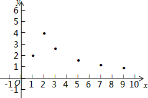

2016年北京市中考数学试题 · 数学解答题 第26题
26．（5分）（2016•北京）已知y是x的函数，自变量x的取值范围x＞0，下表是y与x的几组对应值：
x | … | 1 | 2 | 3 | 5 | 7 | 9 | … |
y | … | 1.98 | 3.95 | 2.63 | 1.58 | 1.13 | 0.88 | … |
小腾根据学习函数的经验，利用上述表格所反映出的y与x之间的变化规律，对该函数的图象与性质进行了探究．
下面是小腾的探究过程，请补充完整：
（1）如图，在平面直角坐标系xOy中，描出了以上表格中各对对应值为坐标的点，根据描出的点，画出该函数的图象；
（2）根据画出的函数图象，写出：
①x=4对应的函数值y约为 ；
②该函数的一条性质： ．
